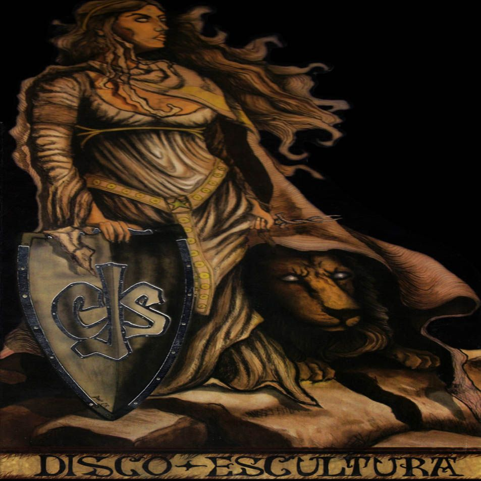
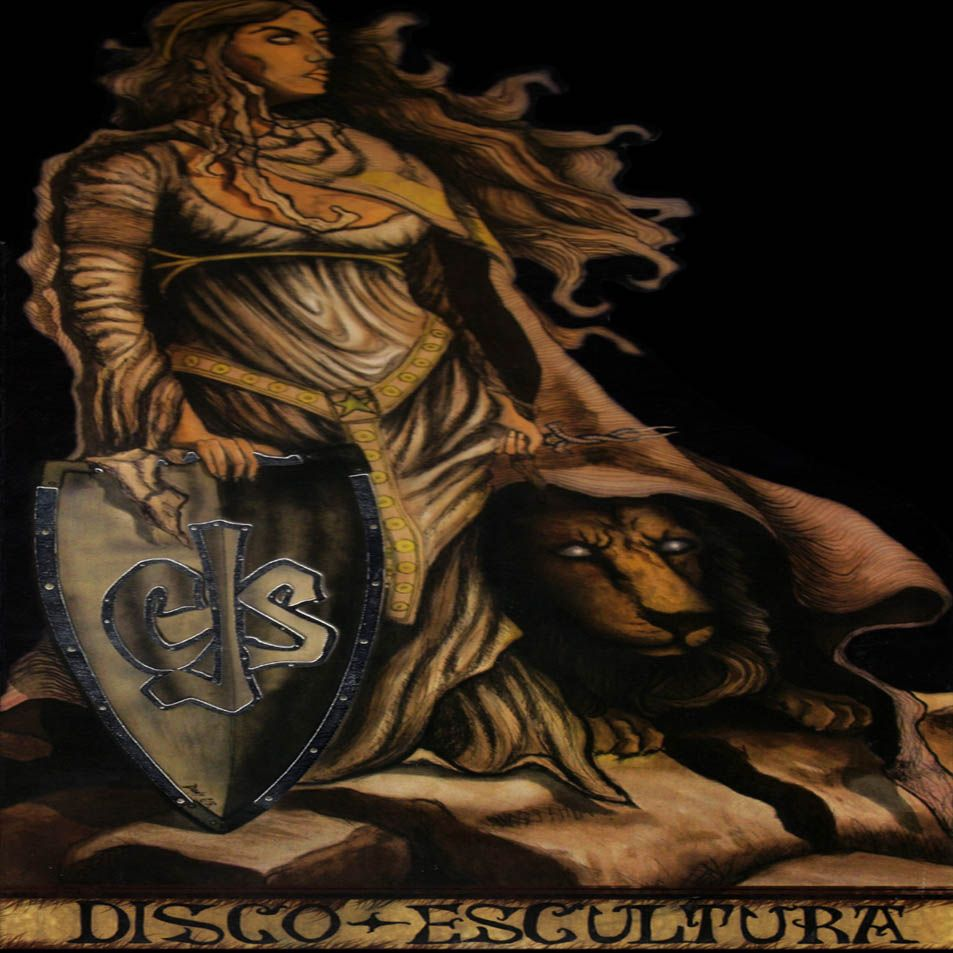

"ROCANROLES SIN DESTINO"
1- Distinto 1- Sé que no sé 3- Sería una pena 4- Algo mejor algo peor 5- Rebelde, agitador y Revolucionario 6- Un lugar perfecto 7- Todo eso 8- Prohibido 9- Tan perfecto que asusta 10- Tratando de olvidar 11- Roncanroles sin destino 12- La llave 13- Parte menor 14- Canciones y almas
"SED"
1-Los invisibles 2-Rompiendo espejos 3- El nudo 4- Milonga de rocanrol 5- Jugando Vicioso, jugador y mujeriego 6- Palo borracho 7- Sonando 8- Tiempo de estar 9- Teatro 10- Sed 11- Ojalá se los lleve
"SEÑALES"
Fue lanzado en el año 2006, lista de temas:
1- Daños 2- Puede 3- Limites 4- Creo 5- Frente al rio 6- Sin paciencia 7- Dia a Dia 8- Sueño 9- Hoy 10- 9 de Julio 11- Señales 12- Desencuentro
"PRESIÓN"
1- viento mejor 2- Presión 3- Tres 4- Una nueva noche fria 5- Fantasía y realidad 6- Morir 7- Cristal 8- Imposible 9- Callejero de Boedo 10- Si me cansé 11- Ahogados de Razón 12- Tiempo perdido 13- El duende del Árbol 14- Ilusion
"DISCO ESCULTURA"
1- Guiños 2- El espejo 3- La canción 4- Rehén 5- Esa invisible linea 6- Mas allá 7- Quedó 8- Siempre un poco más 9- El ignorante 10- Lo que hay 11- Canción de cuna para Julieta 12- Si queres que sea yo 13- Pompeya